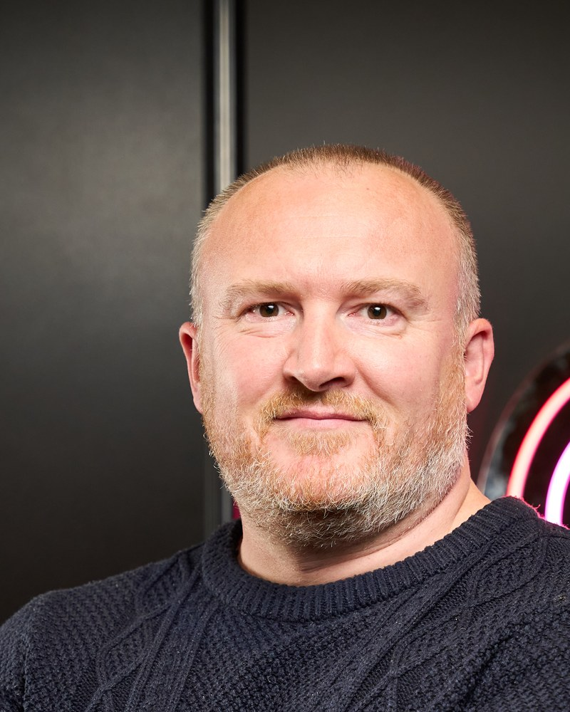

The logistics and supply chain leaders your business actually needs.
From site leadership to the boardroom. SCL Recruitment finds, assesses and delivers operational leaders for logistics and supply chain businesses. Built by operators, not career recruiters.
The cost of getting leadership hiring wrong
Recruiters who have done the job.
We've run the operations we recruit for
25+ years leading logistics operations at scale, including P&L leadership of 4,500-person operations. We know the difference between a CV that reads well and a leader who delivers, because we've hired, managed and been both.
Sector-only, by design
Logistics and supply chain is all we do. That means a live network of operators from site managers to managing directors, and honest advice on what the market will actually give you for your budget.
Middle leadership to the boardroom
One partner across your whole leadership structure. Interim managers, heads of function, directors, C-suite, NEDs and advisers, assessed by someone who has sat on both sides of the table.
Three ways to hire well.
Executive Search
Retained search for director, C-suite and board appointments. Rigorous, discreet, delivered personally.
Click to flipExecutive Search
Managing directors, operations and supply chain directors, COOs, NEDs and board advisers. Market-mapped, stress-tested shortlists you can defend to a board.
Learn more →Leadership Recruitment
Middle and senior management hires: the layer that makes your operation run.
Click to flipLeadership Recruitment
General managers, site leadership, heads of transport, warehousing, planning and supply chain. Screened for operational substance, not keyword matches.
Learn more →Fractional Talent Partner
Your embedded recruitment function on a monthly retainer.
Click to flipFractional Talent Partner
One accountable partner managing your pipeline end to end, at a predictable monthly cost instead of unpredictable placement fees.
Learn more →
Assessed by someone who has done the job.
SCL was founded by Rob Pegg (BA Hons, FCILT): 25+ years in senior logistics and operational leadership, including large P&L and 4,500-person operations, and 17 years at Next PLC. He still operates as a fractional COO and board adviser, so the judgement behind every shortlist is current.
More about SCLBusinesses where operational leadership decides performance.
Owner-managed hauliers and 3PLs. Corporate logistics and supply chain functions. PE-backed businesses building leadership teams through a value creation plan. Investors who need operating talent assessed before and after the deal.
Different owners, same requirement: leaders who can run the operation, hold the number and carry the team.
Recruiting senior leadership talent is never easy, particularly when you need someone who can combine strategic thinking with the ability to deliver results in a fast-growing business. Rob took the time to understand our business, our culture, and exactly what success looked like for the role. The quality of candidates presented was excellent, the communication was proactive throughout, and the individual we ultimately hired has already made a significant impact. I would have no hesitation recommending SCL Recruitment to any organisation looking to secure high-calibre leadership talent.
Straight answers.
What does SCL Recruitment do?
SCL Recruitment is a specialist executive search and leadership recruitment firm for logistics and supply chain. We recruit from middle management through to director, C-suite, NED and board advisory appointments, and offer an embedded Fractional Talent Partner retainer for businesses hiring at volume.
What makes SCL different from other recruitment agencies?
The firm is operator-led. Its founder spent 25+ years running logistics operations, including large P&L and 4,500-person teams, so candidates are assessed against the operational reality of the role rather than interview performance alone.
What roles does SCL Recruitment cover?
General managers, site and shift leadership, heads of transport, warehousing, planning and supply chain, operations and supply chain directors, managing directors, COOs, non-executive directors and board advisers, plus interim and contract equivalents.
How long does an executive search take?
Discovery typically starts within forty-eight hours, market mapping runs in week one, and decision-ready shortlists are usually delivered within two to four weeks depending on role complexity and location.
Where does SCL Recruitment operate?
SCL is based in Wakefield, West Yorkshire and works nationally across the UK, with searches into Europe where a role requires it.
Hiring a leader, or planning to?
A 20-minute conversation will tell you whether we can help and what good looks like in the current market. No pitch, no obligation.
Book a call